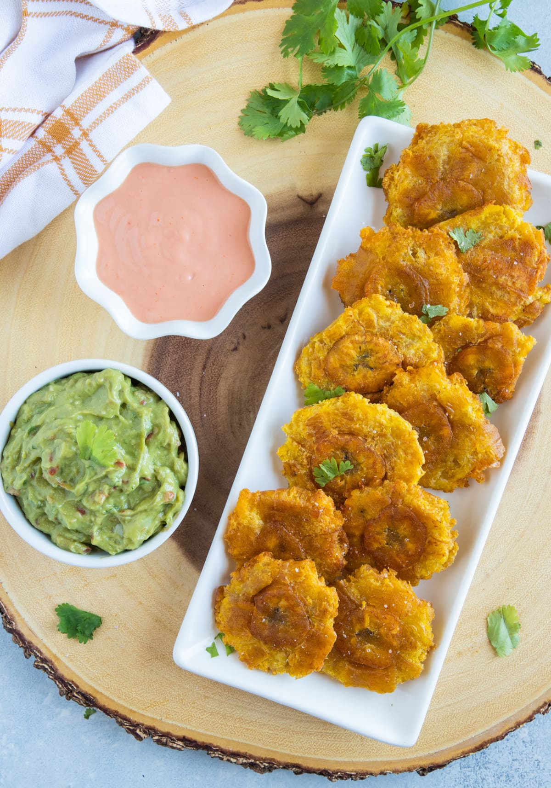

Tostones

Tostones are a popular dish in Latin American and Caribbean cuisine, made from sliced green plantains
that are fried, smashed, and fried again until crispy.
Tostones, with their crispy exterior and soft interior, offer a delightful contrast in texture and a
mild, slightly sweet flavor reminiscent of bananas. After being fried once to soften, the plantain
slices are flattened with a kitchen tool or the bottom of a glass before being fried again to achieve
their characteristic crunchiness. This double-frying method ensures a satisfyingly crispy result,
perfect for dipping into sauces or enjoying on their own as a tasty appetizer or snack.
Ingredients -
- 2 large green plantains
- Vegetable oil (for frying)
- Salt (to taste)
- Optional: Garlic powder or dipping sauce
Instructions -
- Cut off both ends of each plantain.
- Make a shallow slit along the length of the plantain skins
- Use your fingers to peel away the skin. If the plantains are very green, the skin may be more
difficult to remove, so work carefully.
- Cut the peeled plantains into 1-inch thick slices.
- Heat a skillet or frying pan over medium-high heat and add enough vegetable oil to cover the plantain
slices.
- Once the oil is hot (about 350°F or 175°C), carefully add the plantain slices in batches. Do not
overcrowd the pan.
- Fry the plantains for about 3-4 minutes on each side, or until they are golden and slightly tender.
They should not be fully cooked at this stage.
- Remove the plantain slices from the oil and drain them on paper towels.
- Use the bottom of a glass, a plate, or a tostonera (a special press for making tostones) to flatten
each plantain slice to about half its original thickness.
- If the plantains stick, you can lightly oil the pressing tool.
- Return the flattened plantains to the hot oil in batches.
- Fry them again for about 2-3 minutes on each side, or until they are crispy and golden brown.
- Remove the tostones from the oil and drain them on paper towels.
- While the tostones are still hot, sprinkle them with salt to taste. You can also add garlic powder
if you like.
- Serve immediately with your favorite dipping sauce or as a side dish.